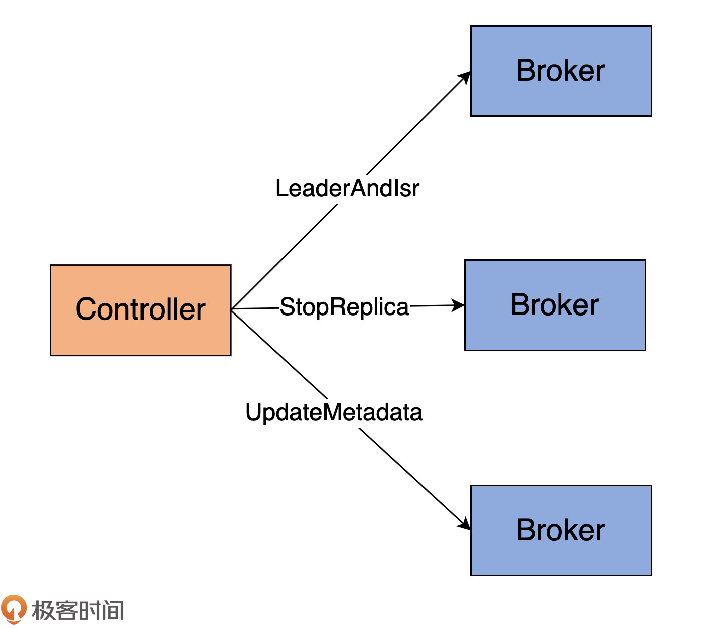

- 00 导读 构建Kafka工程和源码阅读环境、Scala语言热身.md
- 00 开篇词 阅读源码，逐渐成了职业进阶道路上的“必选项”.md
- 00 重磅加餐 带你快速入门Scala语言.md
- 01 日志段：保存消息文件的对象是怎么实现的？.md
- 02 日志（上）：日志究竟是如何加载日志段的？.md
- 03 日志（下）：彻底搞懂Log对象的常见操作.md
- 04 索引（上）：改进的二分查找算法在Kafka索引的应用.md
- 05 索引（下）：位移索引和时间戳索引的区别是什么？.md
- 06 请求通道：如何实现Kafka请求队列？.md
- 07 SocketServer（上）：Kafka到底是怎么应用NIO实现网络通信的？.md
- 08 SocketServer（中）：请求还要区分优先级？.md
- 09 SocketServer（下）：请求处理全流程源码分析.md
- 10 KafkaApis：Kafka最重要的源码入口，没有之一.md
- 11 Controller元数据：Controller都保存有哪些东西？有几种状态？.md
- 12 ControllerChannelManager：Controller如何管理请求发送？.md
- 13 ControllerEventManager：变身单线程后的Controller如何处理事件？.md
- 14 Controller选举是怎么实现的？.md
- 15 如何理解Controller在Kafka集群中的作用？.md
- 16 TopicDeletionManager： Topic是怎么被删除的？.md
- 17 ReplicaStateMachine：揭秘副本状态机实现原理.md
- 18 PartitionStateMachine：分区状态转换如何实现？.md
- 19 TimingWheel：探究Kafka定时器背后的高效时间轮算法.md
- 20 DelayedOperation：Broker是怎么延时处理请求的？.md
- 21 AbstractFetcherThread：拉取消息分几步？.md
- 22 ReplicaFetcherThread：Follower如何拉取Leader消息？.md
- 23 ReplicaManager（上）：必须要掌握的副本管理类定义和核心字段.md
- 24 ReplicaManager（中）：副本管理器是如何读写副本的？.md
- 25 ReplicaManager（下）：副本管理器是如何管理副本的？.md
- 26 MetadataCache：Broker是怎么异步更新元数据缓存的？.md
- 27 消费者组元数据（上）：消费者组都有哪些元数据？.md
- 28 消费者组元数据（下）：Kafka如何管理这些元数据？.md
- 29 GroupMetadataManager：组元数据管理器是个什么东西？.md
- 30 GroupMetadataManager：位移主题保存的只是位移吗？.md
- 31 GroupMetadataManager：查询位移时，不用读取位移主题？.md
- 32 GroupCoordinator：在Rebalance中，Coordinator如何处理成员入组？.md
- 33 GroupCoordinator：在Rebalance中，如何进行组同步？.md
- 特别放送（一）经典的Kafka学习资料有哪些？.md
- 特别放送（三）我是怎么度过日常一天的？.md
- 特别放送（二）一篇文章带你了解参与开源社区的全部流程.md
- 特别放送（五） Kafka 社区的重磅功能：移除 ZooKeeper 依赖.md
- 特别放送（四）20道经典的Kafka面试题详解.md
- 结束语 源码学习，我们才刚上路呢.md
12 ControllerChannelManager：Controller如何管理请求发送？
你好，我是胡夕。上节课，我们深入研究了ControllerContext.scala源码文件，掌握了Kafka集群定义的重要元数据。今天，我们来学习下Controller是如何给其他Broker发送请求的。
掌握了这部分实现原理，你就能更好地了解Controller究竟是如何与集群Broker进行交互，从而实现管理集群元数据的功能的。而且，阅读这部分源码，还能帮你定位和解决线上问题。我先跟你分享一个真实的案例。
当时还是在Kafka 0.10.0.1时代，我们突然发现，在线上环境中，很多元数据变更无法在集群的所有Broker上同步了。具体表现为，创建了主题后，有些Broker依然无法感知到。
我的第一感觉是Controller出现了问题，但又苦于无从排查和验证。后来，我想到，会不会是Controller端请求队列中积压的请求太多造成的呢？因为当时Controller所在的Broker本身承载着非常重的业务，这是非常有可能的原因。
在看了相关代码后，我们就在相应的源码中新加了一个监控指标，用于实时监控Controller的请求队列长度。当更新到生产环境后，我们很轻松地定位了问题。果然，由于Controller所在的Broker自身负载过大，导致Controller端的请求积压，从而造成了元数据更新的滞后。精准定位了问题之后，解决起来就很容易了。后来，社区于0.11版本正式引入了相关的监控指标。
你看，阅读源码，除了可以学习优秀开发人员编写的代码之外，我们还能根据自身的实际情况做定制化方案，实现一些非开箱即用的功能。
Controller发送请求类型
下面，我们就正式进入到Controller请求发送管理部分的学习。你可能会问：“Controller也会给Broker发送请求吗？”当然！Controller会给集群中的所有Broker（包括它自己所在的Broker）机器发送网络请求。发送请求的目的，是让Broker执行相应的指令。我用一张图，来展示下Controller都会发送哪些请求，如下所示：

当前，Controller只会向Broker发送三类请求，分别是LeaderAndIsrRequest、StopReplicaRequest和UpdateMetadataRequest。注意，这里我使用的是“当前”！我只是说，目前仅有这三类，不代表以后不会有变化。事实上，我几乎可以肯定，以后能发送的RPC协议种类一定会变化的。因此，你需要掌握请求发送的原理。毕竟，所有请求发送都是通过相同的机制完成的。
还记得我在[第8节课]提到的控制类请求吗？没错，这三类请求就是典型的控制类请求。我来解释下它们的作用。
- LeaderAndIsrRequest：最主要的功能是，告诉Broker相关主题各个分区的Leader副本位于哪台Broker上、ISR中的副本都在哪些Broker上。在我看来，它应该被赋予最高的优先级，毕竟，它有令数据类请求直接失效的本领。试想一下，如果这个请求中的Leader副本变更了，之前发往老的Leader的PRODUCE请求是不是全部失效了？因此，我认为它是非常重要的控制类请求。
- StopReplicaRequest：告知指定Broker停止它上面的副本对象，该请求甚至还能删除副本底层的日志数据。这个请求主要的使用场景，是分区副本迁移和删除主题。在这两个场景下，都要涉及停掉Broker上的副本操作。
- UpdateMetadataRequest：顾名思义，该请求会更新Broker上的元数据缓存。集群上的所有元数据变更，都首先发生在Controller端，然后再经由这个请求广播给集群上的所有Broker。在我刚刚分享的案例中，正是因为这个请求被处理得不及时，才导致集群Broker无法获取到最新的元数据信息。
现在，社区越来越倾向于将重要的数据结构源代码从服务器端的core工程移动到客户端的clients工程中。这三类请求Java类的定义就封装在clients中，它们的抽象基类是AbstractControlRequest类，这个类定义了这三类请求的公共字段。
我用代码展示下这三类请求及其抽象父类的定义，以便让你对Controller发送的请求类型有个基本的认识。这些类位于clients工程下的src/main/java/org/apache/kafka/common/requests路径下。
先来看AbstractControlRequest类的主要代码：
public abstract class AbstractControlRequest extends AbstractRequest {
public static final long UNKNOWN_BROKER_EPOCH = -1L;
public static abstract class Builder<T extends AbstractRequest> extends AbstractRequest.Builder<T> {
protected final int controllerId;
protected final int controllerEpoch;
protected final long brokerEpoch;
......
}
区别于其他的数据类请求，抽象类请求必然包含3个字段。
- controllerId：Controller所在的Broker ID。
- controllerEpoch：Controller的版本信息。
- brokerEpoch：目标Broker的Epoch。
后面这两个Epoch字段用于隔离Zombie Controller和Zombie Broker，以保证集群的一致性。
在同一源码路径下，你能找到LeaderAndIsrRequest、StopReplicaRequest和UpdateMetadataRequest的定义，如下所示：
public class LeaderAndIsrRequest extends AbstractControlRequest { ...... }
public class StopReplicaRequest extends AbstractControlRequest { ...... }
public class UpdateMetadataRequest extends AbstractControlRequest { ...... }
RequestSendThread
说完了Controller发送什么请求，接下来我们说说怎么发。
Kafka源码非常喜欢生产者-消费者模式。该模式的好处在于，解耦生产者和消费者逻辑，分离两者的集中性交互。学完了“请求处理”模块，现在，你一定很赞同这个说法吧。还记得Broker端的SocketServer组件吗？它就在内部定义了一个线程共享的请求队列：它下面的Processor线程扮演Producer，而KafkaRequestHandler线程扮演Consumer。
对于Controller而言，源码同样使用了这个模式：它依然是一个线程安全的阻塞队列，Controller事件处理线程（第13节课会详细说它）负责向这个队列写入待发送的请求，而一个名为RequestSendThread的线程负责执行真正的请求发送。如下图所示：
Controller会为集群中的每个Broker都创建一个对应的RequestSendThread线程。Broker上的这个线程，持续地从阻塞队列中获取待发送的请求。
那么，Controller往阻塞队列上放什么数据呢？这其实是由源码中的QueueItem类定义的。代码如下：
case class QueueItem(apiKey: ApiKeys, request: AbstractControlRequest.Builder[_ <: AbstractControlRequest], callback: AbstractResponse => Unit, enqueueTimeMs: Long)
每个QueueItem的核心字段都是AbstractControlRequest.Builder对象。你基本上可以认为，它就是阻塞队列上AbstractControlRequest类型。
需要注意的是这里的“<:”符号，它在Scala中表示上边界的意思，即字段request必须是AbstractControlRequest的子类，也就是上面说到的那三类请求。
这也就是说，每个QueueItem实际保存的都是那三类请求中的其中一类。如果使用一个BlockingQueue对象来保存这些QueueItem，那么，代码就实现了一个请求阻塞队列。这就是RequestSendThread类做的事情。
接下来，我们就来学习下RequestSendThread类的定义。我给一些主要的字段添加了注释。
class RequestSendThread(val controllerId: Int, // Controller所在Broker的Id
val controllerContext: ControllerContext, // Controller元数据信息
val queue: BlockingQueue[QueueItem], // 请求阻塞队列
val networkClient: NetworkClient, // 用于执行发送的网络I/O类
val brokerNode: Node, // 目标Broker节点
val config: KafkaConfig, // Kafka配置信息
val time: Time,
val requestRateAndQueueTimeMetrics: Timer,
val stateChangeLogger: StateChangeLogger,
name: String) extends ShutdownableThread(name = name) {
......
}
其实，RequestSendThread最重要的是它的doWork方法，也就是执行线程逻辑的方法：
override def doWork(): Unit = {
def backoff(): Unit = pause(100, TimeUnit.MILLISECONDS)
val QueueItem(apiKey, requestBuilder, callback, enqueueTimeMs) = queue.take() // 以阻塞的方式从阻塞队列中取出请求
requestRateAndQueueTimeMetrics.update(time.milliseconds() - enqueueTimeMs, TimeUnit.MILLISECONDS) // 更新统计信息
var clientResponse: ClientResponse = null
try {
var isSendSuccessful = false
while (isRunning && !isSendSuccessful) {
try {
// 如果没有创建与目标Broker的TCP连接，或连接暂时不可用
if (!brokerReady()) {
isSendSuccessful = false
backoff() // 等待重试
}
else {
val clientRequest = networkClient.newClientRequest(brokerNode.idString, requestBuilder,
time.milliseconds(), true)
// 发送请求，等待接收Response
clientResponse = NetworkClientUtils.sendAndReceive(networkClient, clientRequest, time)
isSendSuccessful = true
}
} catch {
case e: Throwable =>
warn(s"Controller $controllerId epoch ${controllerContext.epoch} fails to send request $requestBuilder " +
s"to broker $brokerNode. Reconnecting to broker.", e)
// 如果出现异常，关闭与对应Broker的连接
networkClient.close(brokerNode.idString)
isSendSuccessful = false
backoff()
}
}
// 如果接收到了Response
if (clientResponse != null) {
val requestHeader = clientResponse.requestHeader
val api = requestHeader.apiKey
// 此Response的请求类型必须是LeaderAndIsrRequest、StopReplicaRequest或UpdateMetadataRequest中的一种
if (api != ApiKeys.LEADER_AND_ISR && api != ApiKeys.STOP_REPLICA && api != ApiKeys.UPDATE_METADATA)
throw new KafkaException(s"Unexpected apiKey received: $apiKey")
val response = clientResponse.responseBody
stateChangeLogger.withControllerEpoch(controllerContext.epoch)
.trace(s"Received response " +
s"${response.toString(requestHeader.apiVersion)} for request $api with correlation id " +
s"${requestHeader.correlationId} sent to broker $brokerNode")
if (callback != null) {
callback(response) // 处理回调
}
}
} catch {
case e: Throwable =>
error(s"Controller $controllerId fails to send a request to broker $brokerNode", e)
networkClient.close(brokerNode.idString)
}
}
我用一张图来说明doWork的执行逻辑：

总体上来看，doWork的逻辑很直观。它的主要作用是从阻塞队列中取出待发送的请求，然后把它发送出去，之后等待Response的返回。在等待Response的过程中，线程将一直处于阻塞状态。当接收到Response之后，调用callback执行请求处理完成后的回调逻辑。
需要注意的是，RequestSendThread线程对请求发送的处理方式与Broker处理请求不太一样。它调用的sendAndReceive方法在发送完请求之后，会原地进入阻塞状态，等待Response返回。只有接收到Response，并执行完回调逻辑之后，该线程才能从阻塞队列中取出下一个待发送请求进行处理。
ControllerChannelManager
了解了RequestSendThread线程的源码之后，我们进入到ControllerChannelManager类的学习。
这个类和RequestSendThread是合作共赢的关系。在我看来，它有两大类任务。
- 管理Controller与集群Broker之间的连接，并为每个Broker创建RequestSendThread线程实例；
- 将要发送的请求放入到指定Broker的阻塞队列中，等待该Broker专属的RequestSendThread线程进行处理。
由此可见，它们是紧密相连的。
ControllerChannelManager类最重要的数据结构是brokerStateInfo，它是在下面这行代码中定义的：
protected val brokerStateInfo = new HashMap[Int, ControllerBrokerStateInfo]
这是一个HashMap类型，Key是Integer类型，其实就是集群中Broker的ID信息，而Value是一个ControllerBrokerStateInfo。
你可能不太清楚ControllerBrokerStateInfo类是什么，我先解释一下。它本质上是一个POJO类，仅仅是承载若干数据结构的容器，如下所示：
case class ControllerBrokerStateInfo(networkClient: NetworkClient,
brokerNode: Node,
messageQueue: BlockingQueue[QueueItem],
requestSendThread: RequestSendThread,
queueSizeGauge: Gauge[Int],
requestRateAndTimeMetrics: Timer,
reconfigurableChannelBuilder: Option[Reconfigurable])
它有三个非常关键的字段。
- brokerNode：目标Broker节点对象，里面封装了目标Broker的连接信息，比如主机名、端口号等。
- messageQueue：请求消息阻塞队列。你可以发现，Controller为每个目标Broker都创建了一个消息队列。
- requestSendThread：Controller使用这个线程给目标Broker发送请求。
你一定要记住这三个字段，因为它们是实现Controller发送请求的关键因素。
为什么呢？我们思考一下，如果Controller要给Broker发送请求，肯定需要解决三个问题：发给谁？发什么？怎么发？“发给谁”就是由brokerNode决定的；messageQueue里面保存了要发送的请求，因而解决了“发什么”的问题；最后的“怎么发”就是依赖requestSendThread变量实现的。
好了，我们现在回到ControllerChannelManager。它定义了5个public方法，我来一一介绍下。
- startup方法：Controller组件在启动时，会调用ControllerChannelManager的startup方法。该方法会从元数据信息中找到集群的Broker列表，然后依次为它们调用addBroker方法，把它们加到brokerStateInfo变量中，最后再依次启动brokerStateInfo中的RequestSendThread线程。
- shutdown方法：关闭所有RequestSendThread线程，并清空必要的资源。
- sendRequest方法：从名字看，就是发送请求，实际上就是把请求对象提交到请求队列。
- addBroker方法：添加目标Broker到brokerStateInfo数据结构中，并创建必要的配套资源，如请求队列、RequestSendThread线程对象等。最后，RequestSendThread启动线程。
- removeBroker方法：从brokerStateInfo移除目标Broker的相关数据。
这里面大部分的方法逻辑都很简单，从方法名字就可以看得出来。我重点说一下addBroker，以及底层相关的私有方法addNewBroker和startRequestSendThread方法。
毕竟，addBroker是最重要的逻辑。每当集群中扩容了新的Broker时，Controller就会调用这个方法为新Broker增加新的RequestSendThread线程。
我们先来看addBroker：
def addBroker(broker: Broker): Unit = {
brokerLock synchronized {
// 如果该Broker是新Broker的话
if (!brokerStateInfo.contains(broker.id)) {
// 将新Broker加入到Controller管理，并创建对应的RequestSendThread线程
addNewBroker(broker)
// 启动RequestSendThread线程
startRequestSendThread(broker.id)
}
}
}
整个代码段被brokerLock保护起来了。还记得brokerStateInfo的定义吗？它仅仅是一个HashMap对象，因为不是线程安全的，所以任何访问该变量的地方，都需要锁的保护。
这段代码的逻辑是，判断目标Broker的序号，是否已经保存在brokerStateInfo中。如果是，就说明这个Broker之前已经添加过了，就没必要再次添加了；否则，addBroker方法会对目前的Broker执行两个操作：
- 把该Broker节点添加到brokerStateInfo中；
- 启动与该Broker对应的RequestSendThread线程。
这两步分别是由addNewBroker和startRequestSendThread方法实现的。
addNewBroker方法的逻辑比较复杂，我用注释的方式给出主要步骤：
private def addNewBroker(broker: Broker): Unit = {
// 为该Broker构造请求阻塞队列
val messageQueue = new LinkedBlockingQueue[QueueItem]
debug(s"Controller ${config.brokerId} trying to connect to broker ${broker.id}")
val controllerToBrokerListenerName = config.controlPlaneListenerName.getOrElse(config.interBrokerListenerName)
val controllerToBrokerSecurityProtocol = config.controlPlaneSecurityProtocol.getOrElse(config.interBrokerSecurityProtocol)
// 获取待连接Broker节点对象信息
val brokerNode = broker.node(controllerToBrokerListenerName)
val logContext = new LogContext(s"[Controller id=${config.brokerId}, targetBrokerId=${brokerNode.idString}] ")
val (networkClient, reconfigurableChannelBuilder) = {
val channelBuilder = ChannelBuilders.clientChannelBuilder(
controllerToBrokerSecurityProtocol,
JaasContext.Type.SERVER,
config,
controllerToBrokerListenerName,
config.saslMechanismInterBrokerProtocol,
time,
config.saslInterBrokerHandshakeRequestEnable,
logContext
)
val reconfigurableChannelBuilder = channelBuilder match {
case reconfigurable: Reconfigurable =>
config.addReconfigurable(reconfigurable)
Some(reconfigurable)
case _ => None
}
// 创建NIO Selector实例用于网络数据传输
val selector = new Selector(
NetworkReceive.UNLIMITED,
Selector.NO_IDLE_TIMEOUT_MS,
metrics,
time,
"controller-channel",
Map("broker-id" -> brokerNode.idString).asJava,
false,
channelBuilder,
logContext
)
// 创建NetworkClient实例
// NetworkClient类是Kafka clients工程封装的顶层网络客户端API
// 提供了丰富的方法实现网络层IO数据传输
val networkClient = new NetworkClient(
selector,
new ManualMetadataUpdater(Seq(brokerNode).asJava),
config.brokerId.toString,
1,
0,
0,
Selectable.USE_DEFAULT_BUFFER_SIZE,
Selectable.USE_DEFAULT_BUFFER_SIZE,
config.requestTimeoutMs,
ClientDnsLookup.DEFAULT,
time,
false,
new ApiVersions,
logContext
)
(networkClient, reconfigurableChannelBuilder)
}
// 为这个RequestSendThread线程设置线程名称
val threadName = threadNamePrefix match {
case None => s"Controller-${config.brokerId}-to-broker-${broker.id}-send-thread"
case Some(name) => s"$name:Controller-${config.brokerId}-to-broker-${broker.id}-send-thread"
}
// 构造请求处理速率监控指标
val requestRateAndQueueTimeMetrics = newTimer(
RequestRateAndQueueTimeMetricName, TimeUnit.MILLISECONDS, TimeUnit.SECONDS, brokerMetricTags(broker.id)
)
// 创建RequestSendThread实例
val requestThread = new RequestSendThread(config.brokerId, controllerContext, messageQueue, networkClient,
brokerNode, config, time, requestRateAndQueueTimeMetrics, stateChangeLogger, threadName)
requestThread.setDaemon(false)
val queueSizeGauge = newGauge(QueueSizeMetricName, () => messageQueue.size, brokerMetricTags(broker.id))
// 创建该Broker专属的ControllerBrokerStateInfo实例
// 并将其加入到brokerStateInfo统一管理
brokerStateInfo.put(broker.id, ControllerBrokerStateInfo(networkClient, brokerNode, messageQueue,
requestThread, queueSizeGauge, requestRateAndQueueTimeMetrics, reconfigurableChannelBuilder))
}
为了方便你理解，我还画了一张流程图形象说明它的执行流程：
addNewBroker的关键在于，要为目标Broker创建一系列的配套资源，比如，NetworkClient用于网络I/O操作、messageQueue用于阻塞队列、requestThread用于发送请求，等等。
至于startRequestSendThread方法，就简单得多了，只有几行代码而已。
protected def startRequestSendThread(brokerId: Int): Unit = {
// 获取指定Broker的专属RequestSendThread实例
val requestThread = brokerStateInfo(brokerId).requestSendThread
if (requestThread.getState == Thread.State.NEW)
// 启动线程
requestThread.start()
}
它首先根据给定的Broker序号信息，从brokerStateInfo中找出对应的ControllerBrokerStateInfo对象。有了这个对象，也就有了为该目标Broker服务的所有配套资源。下一步就是从ControllerBrokerStateInfo中拿出RequestSendThread对象，再启动它就好了。
总结
今天，我结合ControllerChannelManager.scala文件，重点分析了Controller向Broker发送请求机制的实现原理。
Controller主要通过ControllerChannelManager类来实现与其他Broker之间的请求发送。其中，ControllerChannelManager类中定义的RequestSendThread是主要的线程实现类，用于实际发送请求给集群Broker。除了RequestSendThread之外，ControllerChannelManager还定义了相应的管理方法，如添加Broker、移除Broker等。通过这些管理方法，Controller在集群扩缩容时能够快速地响应到这些变化，完成对应Broker连接的创建与销毁。
我们来回顾下这节课的重点。
- Controller端请求：Controller发送三类请求给Broker，分别是LeaderAndIsrRequest、StopReplicaRequest和UpdateMetadataRequest。
- RequestSendThread：该线程负责将请求发送给集群中的相关或所有Broker。
- 请求阻塞队列+RequestSendThread：Controller会为集群上所有Broker创建对应的请求阻塞队列和RequestSendThread线程。
其实，今天讲的所有东西都只是这节课的第二张图中“消费者”的部分，我们并没有详细了解请求是怎么被放到请求队列中的。接下来，我们就会针对这个问题，深入地去探讨Controller单线程的事件处理器是如何实现的。

课后讨论
你觉得，为每个Broker都创建一个RequestSendThread的方案有什么优缺点？
欢迎你在留言区写下你的思考和答案，跟我交流讨论，也欢迎你把今天的内容分享给你的朋友。
© 2019 - 2023 Liangliang Lee. Powered by Vert.x and hexo-theme-book.